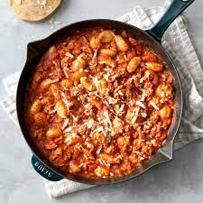
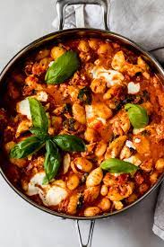

Gnocchi Chicken Skillet


Stovetop chicken and gnocchi recipes Personalize it with your own favorite sauce and seasonings.
Ingredients
- 1 package (16 ounces) potato gnocchi
- 1 pound ground chicken
- 1/2 cup chopped onion
- 2 tablespoons olive oil
- 1 jar (26 ounces) spaghetti sauce
- 1/4 teaspoon salt
- 1/4 to 1/2 teaspoon dried oregano
- Shredded Parmesan cheese, optional
Procedure- Cook gnocchi according to package directions. Meanwhile,
in a large skillet, cook chicken and onion in oil over medium
heat until chicken is no longer pink; drain if necessary. Stir in the
spaghetti sauce, salt and oregano; cook until heated through, 5-10 minutes.
- Drain gnocchi; gently stir into skillet. Garnish servings with cheese if desired.
Click To Return